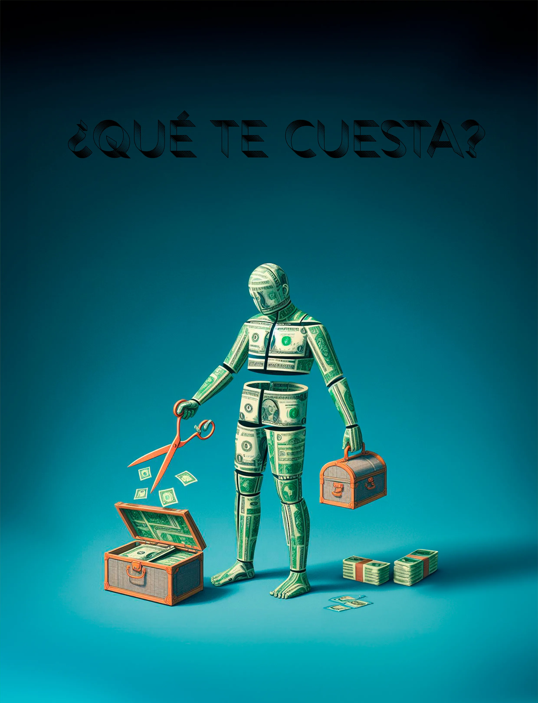
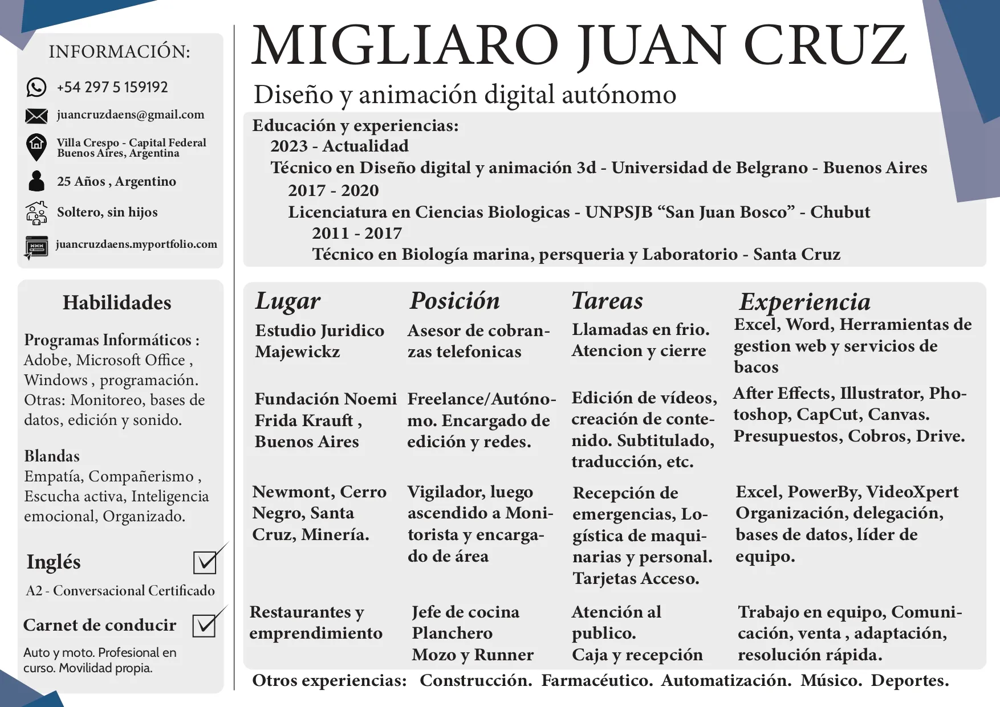

Un poco de mi historia hasta ahora...
Nacido en Caleta Olivia, Santa Cruz , Argentina.
Un 2 de marzo de 1998.
Desde que tengo uso de razon que me interesan los objetos, las formas, los mecanismos , los seres vivos.
Me gradue del secundario en una escuela tecnica en biologia marina y laboratorio
luego me mude y comence a trabajar mientras estudiaba una licenciatura en ciencias biologicas. 3 años mas tarde descubri que no era lo que queria el reconocimiento cientifico ni la investigacion de la materia viva.
Sino que mi gran aficcion era la creacion, el poder imaginar algo y llevarlo a cabo de principio a fin.
Con mucha prueba y error y con varias cosas de por medio decidi estudiar Diseño y animacion digital, que es a lo que me dedico hoy en dia.
Realizando ediciones, animacion, conceptualizacion, ademas de trajar en varios proyectos independientes y en conjunto con otros creativos.
Mi idea es poder generar algo que vos lo veas y sientas algo. Esto a mi parecer se aplica a muchas cosas de la vida, si haces algo con amor creo que termina encontrando el camimo correcto y te lleva a donde necesitas estar.
Abierto a propuestas y proyectos de todo tipo en los que pueda darte una mano, participar o aportar algo.
Musica, Arte, Animaciones, Edicion de video,imagenes,sonido, Color, Sketchbook, Branding, Escenificacion, Ambiente, Modelado, etc.

